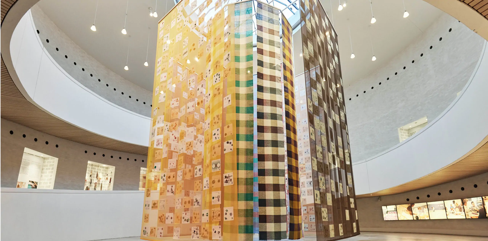
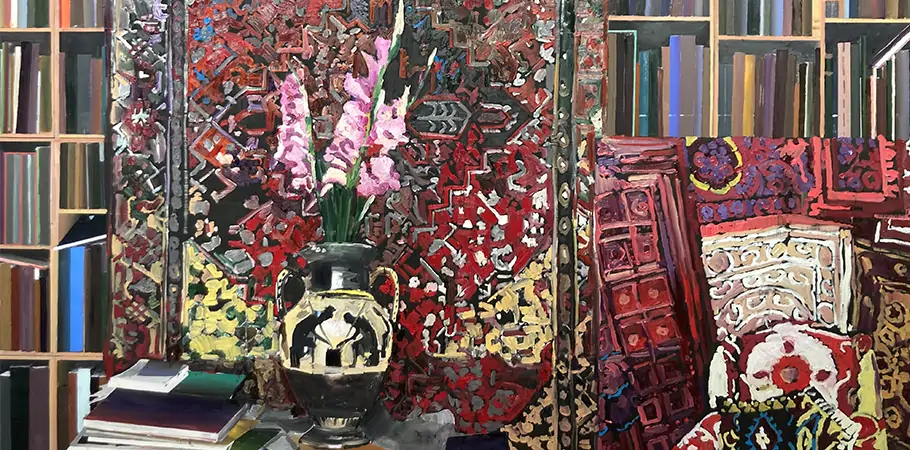
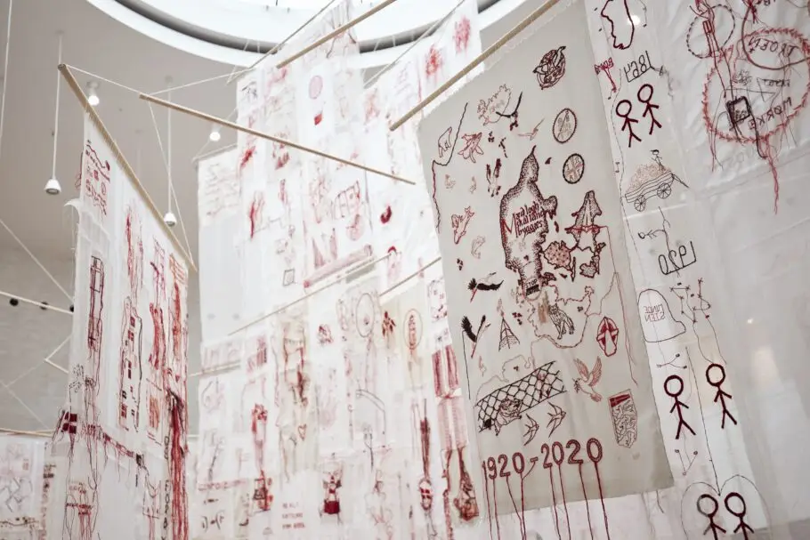
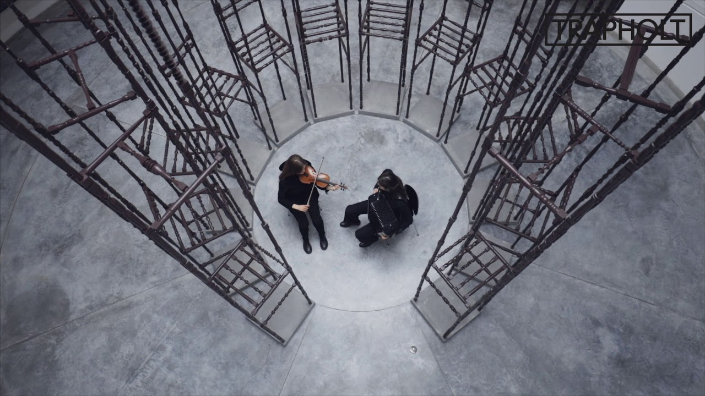

Data Mirror
20.11.2022-05.11.2023
A total of 630 people from all over Denmark accepted the challenge and became part of the large project, which eventually produced the six-metre-tall artwork Data Mirror.

Connect Me
20.11.2022-05.11.2023
The exhibition CONNECT ME focuses on our connections with the world. In a time of climate crisis, growing inequality, insecurity and loneliness, there is a need for new ways of connecting.

Bilingual Design
20.11.2022-05.11.2023
Danish-egyptian furniture presentation
Trapholt presents BILINGUAL DESIGN consisting of 13 stools designed by 21 Danish students from the Institute of Architecture and Design of the Academy and 3 young Egyptian designers.

THE GIOTTO METHOD
10.02.2022 - 20.11.2022
Erik A. Frandsen regarded the pandemic as yet another example of the dissolution of the world. In addition to the actual pandemic, he was concerned with the political collapse in the United States caused by Donald Trump, current showdowns with structural sexism and racism in the wake of the #MeToo

AMONG THE TREES
21.11.2021 - 09.11.2022
Among the Trees is about our great and diverse love for and fascination with nature – and about the importance of biodiversity for nature’s sake and for our own. The project focuses on the high level of craft and creativity that can be found throughout Denmark.

COLOURING NEW WORLD
30.09.2021 - 14.08.2022
Enter a world of extravagant, undulating shapes, bold, intense colours and world-class design in the extensive exhibition Verner Panton – Colouring a New World.

KRYPTOMANIA
20.11.2022-05.11.2023
The exhibition shows new art that invite us into Mørkeberg’s imaginary land “Kryptomania” – a land that Mørkeberg creates in her paintings. Mie Mørkeberg is concerned with how today’s technological possibilities and climate challenges affect the idea that humans, technology and nature must be in a divided order.

DESIGNING DENMARK
10.09.2020 - 15.08.2021
Trapholt presents the most comprehensive Arne Jacobsen exhibition in recent times. It is a sensory journey through the life and work of one of the most beloved architects in the world. From Jacobsen’s childhood as a creative and restless boy who wished to become an artist, to his studies at the academy and the establishment of his first studio as an architect.

STITCHES BEYOND
28.06.2020 - 07.11.2021
The year 2020 marks the 100th anniversary of the reunification of North Schleswig and Denmark. Trapholt wanted its celebration to imbue the reunification with immediate relevance to our present-day lives, and so invited textile artist Iben Høj to create a work of art that reflects on how we think and feel about borders today.

LIGHTHOPE
30.05.2020 - 06.12.2020
A work created during the corona crisis
Textile artist Hanne G and artist and furnituremaker Rasmus Bækkel Fex have brought together 987 people from all over Denmark to jointly create LIGHTHOPE, a work of art made during the COVID-19 shutdown in Denmark.

TINGSTED
19.01.2020 - 10.05.2020
A work created in collaboration The Danish designer Rasmus Bækkel Fex created the work TINGSTED in collaboration with woodturners from all of Denmark.

Flensburg
20.11.2022-05.11.2023
Anette Harboe Flensburg (b. 1961) paints architectural scenes devoid of people. Extending across four rooms, the exhibition In Company with No-One offers a journey that engages the senses in various ways, taking visitors from dark, smouldering oranges and reds to bright, bluish and coolly tinted spaces.